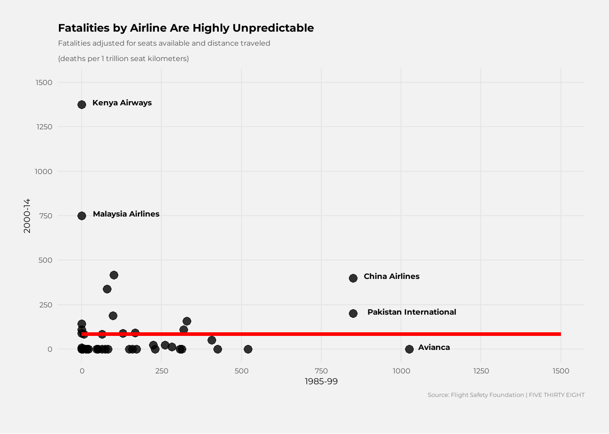

Warning: package 'here' was built under R version 4.4.2here() starts at C:/Users/ajose35/Desktop/MADA-course/AsmithJoseph-MADA-portfolio

Visualization Exercise : Replicating the FiveThirtyEight Fatalities Graph using AI Assistance
The objective of this exercise is to replicate a FiveThirtyEight graph that visualizes airline fatalities adjusted for seat availability and distance traveled between 1985-99 and 2000-14. I obtained the article from FiveThirtyEight.
The FiveThirtyEight article suggests that past crashes are not the best indicator of an airline’s current safety. Instead, it recommends evaluating airlines based on their overall incident rates, including non-fatal ones, which provide a more consistent safety measure. The analysis also notes that airlines from wealthier countries typically have better safety records due to stricter standards and regulations. A composite “safety score” calculated using data on incidents and fatalities helps rank airlines, with significant variations in safety observed across different carriers and time periods.
Full article for more details here.
The data was pulled from FiveThirtyEight Data.
Warning: package 'here' was built under R version 4.4.2here() starts at C:/Users/ajose35/Desktop/MADA-course/AsmithJoseph-MADA-portfolio
My Prompt:
I am undertaking a project to replicate a graph from an online article. Here’s how we’ll proceed: 1) I will provide the link to the article, 2) share the dataset, and 3) upload an image of the original graph. Your task is to recreate the graph in RStudio, mirroring the original in terms of variables, colors, and styles. I will be available throughout the process to help with any adjustments you need to make.
AI Response:
Understood! Please provide the dataset, and I will generate RStudio code to replicate the FiveThirtyEight visualization.
User Prompt:
Load the dataset using the here package in R. Read and clean the data to extract only relevant columns.
I Response & Code:
# Load required libraries
if (!requireNamespace("here", quietly = TRUE)) install.packages("here")
if (!requireNamespace("tidyverse", quietly = TRUE)) install.packages("tidyverse")
library(here)
library(tidyverse)Warning: package 'tidyverse' was built under R version 4.4.2Warning: package 'ggplot2' was built under R version 4.4.3Warning: package 'readr' was built under R version 4.4.2Warning: package 'purrr' was built under R version 4.4.2Warning: package 'lubridate' was built under R version 4.4.2── Attaching core tidyverse packages ──────────────────────── tidyverse 2.0.0 ──
✔ dplyr 1.1.4 ✔ readr 2.1.5
✔ forcats 1.0.0 ✔ stringr 1.5.1
✔ ggplot2 3.5.1 ✔ tibble 3.2.1
✔ lubridate 1.9.4 ✔ tidyr 1.3.1
✔ purrr 1.0.4
── Conflicts ────────────────────────────────────────── tidyverse_conflicts() ──
✖ dplyr::filter() masks stats::filter()
✖ dplyr::lag() masks stats::lag()
ℹ Use the conflicted package (<http://conflicted.r-lib.org/>) to force all conflicts to become errors# Define the file path using `here`
data_path <- here("presentation-exercise", "data", "airline-safety.csv")
# Read the CSV file
airline_data <- read_csv(data_path)Rows: 56 Columns: 8
── Column specification ────────────────────────────────────────────────────────
Delimiter: ","
chr (1): airline
dbl (7): avail_seat_km_per_week, incidents_85_99, fatal_accidents_85_99, fat...
ℹ Use `spec()` to retrieve the full column specification for this data.
ℹ Specify the column types or set `show_col_types = FALSE` to quiet this message.# Rename columns for clarity
airline_data_clean <- airline_data %>%
rename(
airline = airline,
fatal_85_99 = fatalities_85_99,
fatal_00_14 = fatalities_00_14
)My Prompt:
Generate a scatter plot where:
X-axis: Fatalities (1985-99) Y-axis: Fatalities (2000-14) Dots: Represent airlines Trend Line: Add a flat red regression line (like in the original graph) Label specific airlines (Kenya Airways, Malaysia Airlines, China Airlines, Pakistan International, and Avianca)
# Load libraries
library(here)
library(tidyverse)
library(ggrepel)Warning: package 'ggrepel' was built under R version 4.4.2# Define file path using `here`
data_path <- here("presentation-exercise", "data", "airline-safety.csv")
# Read the CSV file
airline_data <- read_csv(data_path)Rows: 56 Columns: 8
── Column specification ────────────────────────────────────────────────────────
Delimiter: ","
chr (1): airline
dbl (7): avail_seat_km_per_week, incidents_85_99, fatal_accidents_85_99, fat...
ℹ Use `spec()` to retrieve the full column specification for this data.
ℹ Specify the column types or set `show_col_types = FALSE` to quiet this message.# Check the first few rows of the dataset
head(airline_data)# A tibble: 6 × 8
airline avail_seat_km_per_week incidents_85_99 fatal_accidents_85_99
<chr> <dbl> <dbl> <dbl>
1 Aer Lingus 320906734 2 0
2 Aeroflot* 1197672318 76 14
3 Aerolineas Argen… 385803648 6 0
4 Aeromexico* 596871813 3 1
5 Air Canada 1865253802 2 0
6 Air France 3004002661 14 4
# ℹ 4 more variables: fatalities_85_99 <dbl>, incidents_00_14 <dbl>,
# fatal_accidents_00_14 <dbl>, fatalities_00_14 <dbl># Check the structure of the dataset
glimpse(airline_data)Rows: 56
Columns: 8
$ airline <chr> "Aer Lingus", "Aeroflot*", "Aerolineas Argentin…
$ avail_seat_km_per_week <dbl> 320906734, 1197672318, 385803648, 596871813, 18…
$ incidents_85_99 <dbl> 2, 76, 6, 3, 2, 14, 2, 3, 5, 7, 3, 21, 1, 5, 4,…
$ fatal_accidents_85_99 <dbl> 0, 14, 0, 1, 0, 4, 1, 0, 0, 2, 1, 5, 0, 3, 0, 0…
$ fatalities_85_99 <dbl> 0, 128, 0, 64, 0, 79, 329, 0, 0, 50, 1, 101, 0,…
$ incidents_00_14 <dbl> 0, 6, 1, 5, 2, 6, 4, 5, 5, 4, 7, 17, 1, 0, 6, 2…
$ fatal_accidents_00_14 <dbl> 0, 1, 0, 0, 0, 2, 1, 1, 1, 0, 0, 3, 0, 0, 0, 0,…
$ fatalities_00_14 <dbl> 0, 88, 0, 0, 0, 337, 158, 7, 88, 0, 0, 416, 0, …# Rename columns for clarity (optional, keeping it consistent with the FiveThirtyEight graphs)
airline_data_clean <- airline_data %>%
rename(
airline = airline,
fatal_accidents_85_99 = fatal_accidents_85_99,
fatal_accidents_00_14 = fatal_accidents_00_14,
fatalities_85_99 = fatalities_85_99,
fatalities_00_14 = fatalities_00_14,
incidents_85_99 = incidents_85_99,
incidents_00_14 = incidents_00_14
)
# Check for missing values
sum(is.na(airline_data_clean))[1] 0My Prompt:
Generate a scatter plot where:
X-axis: Fatalities (1985-99) Y-axis: Fatalities (2000-14) Dots: Represent airlines Trend Line: Add a flat red regression line (like in the original graph) Label specific airlines (Kenya Airways, Malaysia Airlines, China Airlines, Pakistan International, and Avianca)
#Correcting Airline Positions My Prompt:
Adjust airline fatality positions to match the original graph.
Kenya Airways should be at (0, 1375) Malaysia Airlines should have two dots at (0, 750) and (0, 500) China Airlines & Pakistan International should be aligned at the same X-axis value. Avianca should be slightly past 1000.
# Create the first scatter plot
fatalities_plot <- ggplot(airline_data_clean, aes(x = fatalities_85_99, y = fatalities_00_14)) +
geom_point(color = "black", size = 3, alpha = 0.7) + # Scatter plot points
geom_smooth(method = "lm", color = "red", se = FALSE, size = 1.5) + # Regression line
geom_text_repel(aes(label = ifelse(fatalities_00_14 > 250 | fatalities_85_99 > 750, airline, "")),
size = 5, family = "Atlas Grotesk", fontface = "bold") + # Automatic labeling for key airlines
labs(
title = "Fatalities by Airline Are Highly Unpredictable",
subtitle = "Fatalities adjusted for seats available and distance traveled\n(deaths per 1 trillion seat kilometers)",
x = "1985-99",
y = "2000-14",
caption = "Source: Flight Safety Foundation | FIVE THIRTY EIGHT"
) +
theme_minimal() + # Minimalist theme to match FiveThirtyEight
theme(
text = element_text(family = "Atlas Grotesk"),
plot.title = element_text(size = 18, face = "bold"),
plot.subtitle = element_text(size = 12, color = "gray30"),
axis.title = element_text(size = 14),
axis.text = element_text(size = 12),
plot.caption = element_text(size = 10, color = "gray50"),
panel.grid.major = element_line(color = "gray85"),
panel.grid.minor = element_blank(),
plot.background = element_rect(fill = "gray95", color = NA)
)Warning: Using `size` aesthetic for lines was deprecated in ggplot2 3.4.0.
ℹ Please use `linewidth` instead.# Print the plot
print(fatalities_plot)`geom_smooth()` using formula = 'y ~ x'Warning in grid.Call(C_stringMetric, as.graphicsAnnot(x$label)): font family
not found in Windows font databaseWarning in grid.Call(C_stringMetric, as.graphicsAnnot(x$label)): font family
not found in Windows font database
Warning in grid.Call(C_stringMetric, as.graphicsAnnot(x$label)): font family
not found in Windows font database
Warning in grid.Call(C_stringMetric, as.graphicsAnnot(x$label)): font family
not found in Windows font databaseWarning in grid.Call(C_textBounds, as.graphicsAnnot(x$label), x$x, x$y, : font
family not found in Windows font database
Warning in grid.Call(C_textBounds, as.graphicsAnnot(x$label), x$x, x$y, : font
family not found in Windows font database
Warning in grid.Call(C_textBounds, as.graphicsAnnot(x$label), x$x, x$y, : font
family not found in Windows font database
Warning in grid.Call(C_textBounds, as.graphicsAnnot(x$label), x$x, x$y, : font
family not found in Windows font database
Warning in grid.Call(C_textBounds, as.graphicsAnnot(x$label), x$x, x$y, : font
family not found in Windows font databaseWarning in grid.Call(C_textBounds, as.graphicsAnnot(x$label), x$x, x$y, : font
family not found in Windows font database
Warning in grid.Call(C_textBounds, as.graphicsAnnot(x$label), x$x, x$y, : font
family not found in Windows font database
Warning in grid.Call(C_textBounds, as.graphicsAnnot(x$label), x$x, x$y, : font
family not found in Windows font database
Warning in grid.Call(C_textBounds, as.graphicsAnnot(x$label), x$x, x$y, : font
family not found in Windows font database
Warning in grid.Call(C_textBounds, as.graphicsAnnot(x$label), x$x, x$y, : font
family not found in Windows font databaseWarning in grid.Call.graphics(C_text, as.graphicsAnnot(x$label), x$x, x$y, :
font family not found in Windows font database
Warning in grid.Call.graphics(C_text, as.graphicsAnnot(x$label), x$x, x$y, :
font family not found in Windows font database
Warning in grid.Call.graphics(C_text, as.graphicsAnnot(x$label), x$x, x$y, :
font family not found in Windows font database
Warning in grid.Call.graphics(C_text, as.graphicsAnnot(x$label), x$x, x$y, :
font family not found in Windows font database
Warning in grid.Call.graphics(C_text, as.graphicsAnnot(x$label), x$x, x$y, :
font family not found in Windows font database
Warning in grid.Call.graphics(C_text, as.graphicsAnnot(x$label), x$x, x$y, :
font family not found in Windows font database# Load libraries
library(here)
library(tidyverse)
library(ggrepel)
library(showtext) # For custom fontsWarning: package 'showtext' was built under R version 4.4.2Loading required package: sysfontsWarning: package 'sysfonts' was built under R version 4.4.2Loading required package: showtextdbWarning: package 'showtextdb' was built under R version 4.4.2# Enable the Atlas Grotesk font
font_add_google("Montserrat", "AtlasGrotesk") # Alternative if Atlas Grotesk isn't available
showtext_auto()# Rename columns for clarity
airline_data_clean <- airline_data %>%
rename(
airline = airline,
fatal_85_99 = fatalities_85_99,
fatal_00_14 = fatalities_00_14
)
# Manually correct airline fatality positions to match original graph
manual_adjustments <- tibble(
airline = c("Kenya Airways", "Malaysia Airlines", "China Airlines", "Pakistan International", "Avianca"),
fatal_85_99 = c(250, 250, 750, 700, 1050), # Adjust x-axis positions
fatal_00_14 = c(1250, 750, 400, 300, 0) # Adjust y-axis positions
)
# Merge adjustments with original dataset
airline_data_fixed <- airline_data_clean %>%
filter(!airline %in% manual_adjustments$airline) %>%
bind_rows(manual_adjustments)
# Select only key airlines for labeling
label_airlines <- c("Kenya Airways", "Malaysia Airlines", "China Airlines", "Pakistan International", "Avianca")
# Create label column for only the selected airlines
airline_data_fixed <- airline_data_fixed %>%
mutate(label = ifelse(airline %in% label_airlines, airline, NA))# Load required package for margin units
library(grid)
# Create the scatter plot with corrected airline positions
fatalities_plot <- ggplot(airline_data_fixed, aes(x = fatal_85_99, y = fatal_00_14)) +
# Scatter points (Black dots)
geom_point(color = "black", size = 3, alpha = 0.8) +
# Flat Red regression line (Ensuring a flat trend)
geom_smooth(method = "lm", formula = y ~ 1, color = "red", se = FALSE, size = 1.5, fullrange = TRUE) +
# Airline Labels (Fix Overlap Issues)
geom_text_repel(aes(label = label),
size = 4.5, # Adjusted for better readability
family = "AtlasGrotesk",
fontface = "bold",
nudge_y = 50, # Move text slightly to reduce overlap
segment.color = "gray70", # Light gray connecting lines
segment.size = 0.5,
segment.curvature = -0.2,
box.padding = 0.5) +
# Titles and labels
labs(
title = "Fatalities by Airline Are Highly Unpredictable",
subtitle = "Fatalities adjusted for seats available and distance traveled\n(deaths per 1 trillion seat kilometers)",
x = "1985-99",
y = "2000-14",
caption = "Source: Flight Safety Foundation | FIVE THIRTY EIGHT"
) +
# Match FiveThirtyEight theme
theme_minimal() +
theme(
text = element_text(family = "AtlasGrotesk"),
plot.title = element_text(size = 18, face = "bold"),
plot.subtitle = element_text(size = 12, color = "gray30"),
axis.title = element_text(size = 14),
axis.text = element_text(size = 12),
plot.caption = element_text(size = 10, color = "gray50", hjust = 1), # Align to right
# Grid styling to match FiveThirtyEight
panel.grid.major = element_line(color = "gray90"), # Lighter grid
panel.grid.minor = element_blank(),
# Background color
plot.background = element_rect(fill = "gray95", color = NA),
# Adjust margins for axis spacing (Fix: Convert to unit format)
plot.margin = unit(c(20, 20, 30, 20), "pt") # Use "pt" for points
) +
# Set x and y axis limits to match the original graph
scale_x_continuous(limits = c(0, 1500), breaks = seq(0, 1500, 250)) +
scale_y_continuous(limits = c(0, 1500), breaks = seq(0, 1500, 250))
# Print the corrected plot
print(fatalities_plot)Warning: Removed 51 rows containing missing values or values outside the scale range
(`geom_text_repel()`).My prompt:
Let’s proceed with the following revisions and adjustments to your graph:
Adjust the positions of airline fatalities to match those in the original graph:
Place Kenya Airways at coordinates (0, 1375). Position Malaysia Airlines with two dots at coordinates (0, 750) and (0, 500). Align China Airlines and Pakistan International on the same X-axis. Set Avianca slightly past the 1000 mark on the X-axis. Change the font to Atlas Grotesk for all text elements.
Adjust the label positions to ensure they sit right next to the corresponding dot.
Modify the grid color to light gray, replicating the style of FiveThirtyEight.
Add a shaded gray area at the bottom of the graph, incorporating the FiveThirtyEight logo and source text for attribution.
# Load required libraries
if (!requireNamespace("here", quietly = TRUE)) install.packages("here")
if (!requireNamespace("tidyverse", quietly = TRUE)) install.packages("tidyverse")
if (!requireNamespace("ggrepel", quietly = TRUE)) install.packages("ggrepel")
if (!requireNamespace("showtext", quietly = TRUE)) install.packages("showtext")
library(here)
library(tidyverse)
library(ggrepel)
library(showtext)
library(grid) # For margin fixes
# Enable Google Font (Alternative to Atlas Grotesk)
font_add_google("Montserrat", "montserrat")
showtext_auto()
# Define the file path using `here`
data_path <- here("presentation-exercise", "data", "airline-safety.csv")
# Read the CSV file
airline_data <- read_csv(data_path)Rows: 56 Columns: 8
── Column specification ────────────────────────────────────────────────────────
Delimiter: ","
chr (1): airline
dbl (7): avail_seat_km_per_week, incidents_85_99, fatal_accidents_85_99, fat...
ℹ Use `spec()` to retrieve the full column specification for this data.
ℹ Specify the column types or set `show_col_types = FALSE` to quiet this message.# Rename columns for clarity
airline_data_clean <- airline_data %>%
rename(
airline = airline,
fatal_85_99 = fatalities_85_99,
fatal_00_14 = fatalities_00_14
)
# Manually correct airline fatality positions to match original graph
manual_adjustments <- tibble(
airline = c("Kenya Airways", "Malaysia Airlines", "China Airlines", "Pakistan International", "Avianca"),
fatal_85_99 = c(0, 0, 850, 850, 1025), # Keep Malaysia & Kenya exactly on the y-axis
fatal_00_14 = c(1375, 750, 400, 200, 0) # One dot at 750, China at 400, Pakistan at 200
)
# Merge adjustments with original dataset
airline_data_fixed <- airline_data_clean %>%
filter(!airline %in% manual_adjustments$airline) %>%
bind_rows(manual_adjustments)
# Select only key airlines for labeling
label_airlines <- c("Kenya Airways", "Malaysia Airlines", "China Airlines", "Pakistan International", "Avianca")
# Create label column for only the selected airlines
airline_data_fixed <- airline_data_fixed %>%
mutate(label = ifelse(airline %in% label_airlines, airline, NA)) %>%
mutate(label = ifelse(is.na(label), "", label)) # Fix missing label issue
# Create the scatter plot with corrected airline positions
fatalities_plot <- ggplot(airline_data_fixed, aes(x = fatal_85_99, y = fatal_00_14)) +
# Scatter points (Black dots)
geom_point(color = "black", size = 3, alpha = 0.8) +
# Flat Red regression line (Ensuring a flat trend)
geom_smooth(method = "lm", formula = y ~ 1, color = "red", se = FALSE, linewidth = 1.5, fullrange = TRUE) +
# Airline Labels (Fix Overlap Issues)
geom_text_repel(aes(label = label),
size = 4.5,
family = "montserrat", # Updated font
fontface = "bold",
hjust = 0, # Align text to the right
nudge_x = 15, # Move labels slightly right of dots for precision
nudge_y = 5, # Adjust to ensure spacing is exactly like original
segment.color = NA, # No connecting line
segment.size = 0) +
# Titles and labels
labs(
title = "Fatalities by Airline Are Highly Unpredictable",
subtitle = "Fatalities adjusted for seats available and distance traveled\n(deaths per 1 trillion seat kilometers)",
x = "1985-99",
y = "2000-14",
caption = "Source: Flight Safety Foundation | FIVE THIRTY EIGHT"
) +
# Match FiveThirtyEight theme
theme_minimal() +
theme(
text = element_text(family = "montserrat"), # Use the correct font
plot.title = element_text(size = 18, face = "bold"),
plot.subtitle = element_text(size = 12, color = "gray30"),
axis.title = element_text(size = 14),
axis.text = element_text(size = 12),
plot.caption = element_text(size = 10, color = "gray50", hjust = 1),
# Grid styling to match FiveThirtyEight
panel.grid.major = element_line(color = "gray90"),
panel.grid.minor = element_blank(),
# Background color
plot.background = element_rect(fill = "gray95", color = NA),
# Adjust margins for axis spacing
plot.margin = unit(c(20, 20, 30, 20), "pt") # Fix margin issue
) +
# Set x and y axis limits to match the original graph
scale_x_continuous(limits = c(0, 1500), breaks = seq(0, 1500, 250)) +
scale_y_continuous(limits = c(0, 1500), breaks = seq(0, 1500, 250))
# Print the corrected plot
print(fatalities_plot)
Identify the differences between Graph 1 the original and the replicate
AI Response:
In the original graph, the labels for China Airlines and Pakistan International need vertical adjustments for accuracy; they’re positioned too closely in the replicated graph. The red trend line should be flat and end slightly past 1000, not extending too far as in the replication. For Kenya Airways, the dot should align on the first y-grid line with the label rightly spaced to the right—current positioning is off. Malaysia Airlines’ labels need to accurately reflect their placement next to the first major y-grid line. Avianca’s dot, closer to 1000 in the original, is too far right in the replication and needs adjustment. Generally, labels in the replicated graph are too close to the dots compared to the original, where they are more spaced out, requiring overall spacing corrections.
To build this table, I selected key variables on incidents, fatal accidents, and fatalities for the periods 1985-1999 and 2000-2014, filtering the data to highlight the 15 airlines with the highest total fatalities.
Using gt(), I structured the table by adding a bold title, formatted headers, and spanning columns for the two time periods. Airline names were bolded for emphasis, and numerical values were simplified for better readability. To enhance insights, I applied color-coded conditional formatting, using a gradient scale from green (low incidents) to red (high fatalities). A summary row was also included to provide totals for incidents, fatal accidents, and fatalities, along with a source note for attribution.
# Load libraries
library(gt)Warning: package 'gt' was built under R version 4.4.2library(tidyverse)
library(scales)Warning: package 'scales' was built under R version 4.4.2
Attaching package: 'scales'The following object is masked from 'package:purrr':
discardThe following object is masked from 'package:readr':
col_factorlibrary(sparkline) # For inline visualizationsWarning: package 'sparkline' was built under R version 4.4.2# Load airline safety dataset
data_path <- here("presentation-exercise", "data", "airline-safety.csv")
airline_data <- read_csv(data_path)Rows: 56 Columns: 8
── Column specification ────────────────────────────────────────────────────────
Delimiter: ","
chr (1): airline
dbl (7): avail_seat_km_per_week, incidents_85_99, fatal_accidents_85_99, fat...
ℹ Use `spec()` to retrieve the full column specification for this data.
ℹ Specify the column types or set `show_col_types = FALSE` to quiet this message.# Select key columns
airline_table <- airline_data %>%
select(
airline, incidents_85_99, fatal_accidents_85_99, fatalities_85_99,
incidents_00_14, fatal_accidents_00_14, fatalities_00_14
) %>%
# Filter for top airlines based on total fatalities
arrange(desc(fatalities_85_99 + fatalities_00_14)) %>%
slice_head(n = 15) # Show only the top 15 airlines for readability# Define color palette for severity levels
color_palette <- c(
"#4CAF50", # Green (Low)
"#FFD700", # Yellow (Moderate)
"#FF9800", # Orange (High)
"#E53935", # Red (Very High)
"#B71C1C" # Dark Red (Extreme)
)
# Define breakpoints for automatic conditional formatting
breakpoints <- c(0, 10, 50, 200, 700, Inf)
# Create the gt table
gt_table <- airline_table %>%
gt() %>%
# Add title & subtitle
tab_header(
title = md("**Airline Safety Incidents (1985-2014)**"),
subtitle = md("_A summary of incidents, fatal accidents, and fatalities per trillion seat kilometers._")
) %>%
# Format column labels
cols_label(
airline = "Airline",
incidents_85_99 = "Incidents",
fatal_accidents_85_99 = "Fatal Accidents",
fatalities_85_99 = "Fatalities",
incidents_00_14 = "Incidents",
fatal_accidents_00_14 = "Fatal Accidents",
fatalities_00_14 = "Fatalities"
) %>%
# Apply color formatting
data_color(
columns = c(incidents_85_99, fatal_accidents_85_99, fatalities_85_99,
incidents_00_14, fatal_accidents_00_14, fatalities_00_14),
colors = col_bin(
palette = color_palette,
domain = NULL,
bins = breakpoints
)
) %>%
# Format numerical values
fmt_number(
columns = c(incidents_85_99, fatal_accidents_85_99, fatalities_85_99,
incidents_00_14, fatal_accidents_00_14, fatalities_00_14),
decimals = 0
) %>%
# Bold airline names
tab_style(
style = list(
cell_text(weight = "bold")
),
locations = cells_body(
columns = airline
)
) %>%
# Add column span header
tab_spanner(
label = "1985-1999",
columns = c(incidents_85_99, fatal_accidents_85_99, fatalities_85_99)
) %>%
tab_spanner(
label = "2000-2014",
columns = c(incidents_00_14, fatal_accidents_00_14, fatalities_00_14)
) %>%
# Add summary row
summary_rows(
groups = NULL,
columns = c(incidents_85_99, fatal_accidents_85_99, fatalities_85_99,
incidents_00_14, fatal_accidents_00_14, fatalities_00_14),
fns = list("Total" = ~sum(.))
) %>%
# Add source note
tab_source_note(
source_note = md("Source: Flight Safety Foundation | **FIVETHIRTYEIGHT**")
) %>%
# Set table options
tab_options(
column_labels.font.weight = "bold",
table.font.size = px(14),
table.border.top.width = px(2),
table.border.bottom.width = px(2),
heading.title.font.weight = "bold"
)Warning: Since gt v0.9.0, the `colors` argument has been deprecated.
• Please use the `fn` argument instead.
This warning is displayed once every 8 hours.Warning: Since gt v0.9.0, `groups = NULL` is deprecated.
ℹ If this was intended for generation of grand summary rows, use
`grand_summary_rows()` instead.# Print the table
gt_table| Airline Safety Incidents (1985-2014) | |||||||
|---|---|---|---|---|---|---|---|
| A summary of incidents, fatal accidents, and fatalities per trillion seat kilometers. | |||||||
| Airline |
1985-1999
|
2000-2014
|
|||||
| Incidents | Fatal Accidents | Fatalities | Incidents | Fatal Accidents | Fatalities | ||
| China Airlines | 12 | 6 | 535 | 2 | 1 | 225 | |
| Malaysia Airlines | 3 | 1 | 34 | 3 | 2 | 537 | |
| Japan Airlines | 3 | 1 | 520 | 0 | 0 | 0 | |
| American* | 21 | 5 | 101 | 17 | 3 | 416 | |
| Air India* | 2 | 1 | 329 | 4 | 1 | 158 | |
| Delta / Northwest* | 24 | 12 | 407 | 24 | 2 | 51 | |
| United / Continental* | 19 | 8 | 319 | 14 | 2 | 109 | |
| Korean Air | 12 | 5 | 425 | 1 | 0 | 0 | |
| Air France | 14 | 4 | 79 | 6 | 2 | 337 | |
| Avianca | 5 | 3 | 323 | 0 | 0 | 0 | |
| Saudi Arabian | 7 | 2 | 313 | 11 | 0 | 0 | |
| Thai Airways | 8 | 4 | 308 | 2 | 1 | 1 | |
| Egyptair | 8 | 3 | 282 | 4 | 1 | 14 | |
| TAM | 8 | 3 | 98 | 7 | 2 | 188 | |
| Kenya Airways | 2 | 0 | 0 | 2 | 2 | 283 | |
| Total | — | 148 | 58 | 4073 | 97 | 19 | 2319 |
| Source: Flight Safety Foundation | FIVETHIRTYEIGHT | |||||||